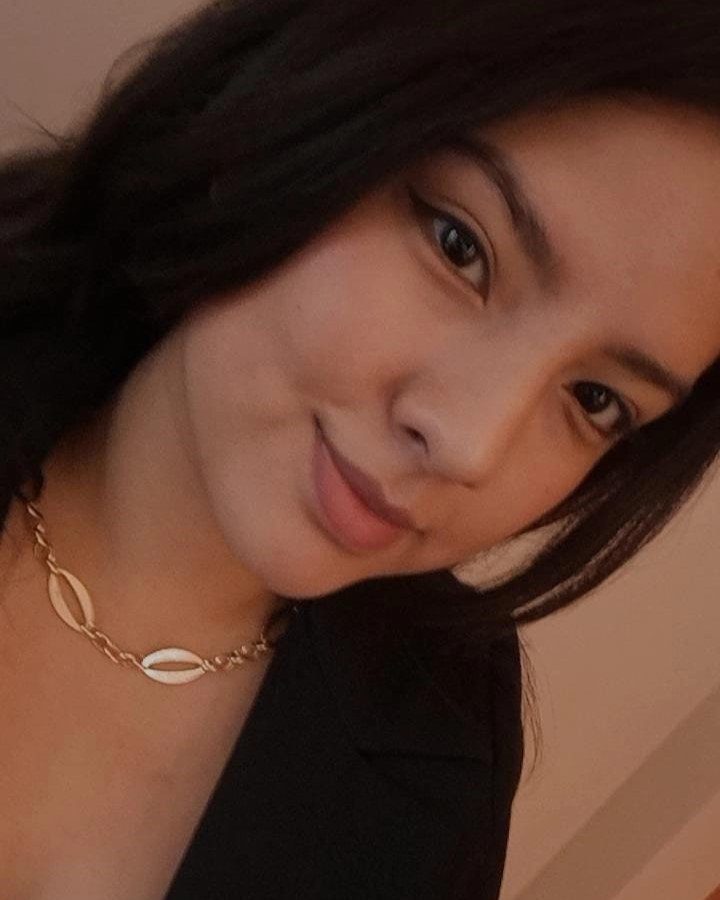

SEMANA 1
 |
Esta semana recordamos como usar la impresora 3D. Junto con mi grupo decidimos que a todos nos gusta el Pollo a la Brasa. Por lo que decidimos dibujarlo para imprimirlo. Y este fue el resultado |  |
|  | Hola mi nombre es Karla Sanchez, soy de la Carrera de CAM y en esta página WEB les mostraré todo lo que hice en este Primer Promedio de Laboratorio 2 |
|
Esta semana recordamos como usar la impresora 3D. Junto con mi grupo decidimos que a todos nos gusta el Pollo a la Brasa. Por lo que decidimos dibujarlo para imprimirlo. Y este fue el resultado | |
 |
Esta semana hicimos diferentes grupos, esta vez para crear una propuesta que ayude a alguna ODS. A mi grupo le tocó la ODS #3 "Salud y Bienestar". Después de ver los diferentes problemas que hay con respecto a la salud física y mental, decidimos hacer una app que nos ayude a mejorar la salud mental en el Perú, sobretodo en los jóvenes y persnas con bajos recursos económicos. La llamamos "PsyContigo" |  |
 |
Esta semana la actividad fué individual y tuvimos que diseñar un dispositivo, plasmarlo en la hoja. Dar las características y funcionamiento. A pesar de que no me agrada mucho hacer proyectos enfocados en mascotas(porque considero que todos lo hacen) Esta vez decidí hacer un dispositivo que ayude a regular la temperatura corporal de nuestras mascotas en climas extremos. |  |